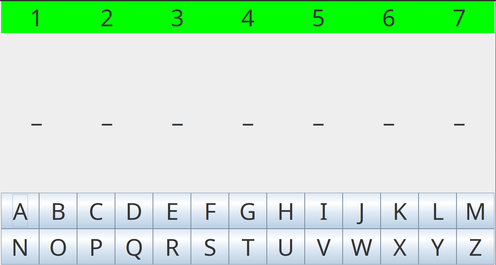
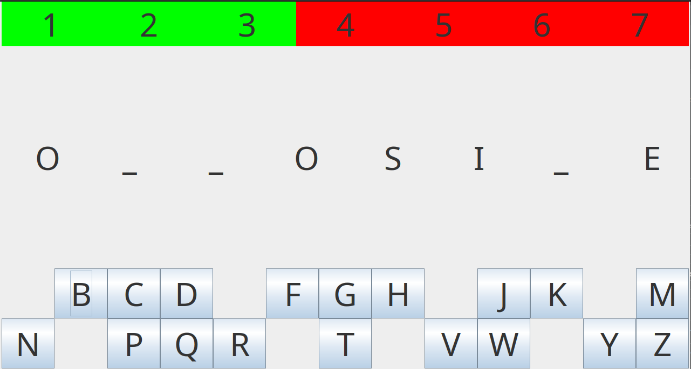

A game of Hangman in progress.
This Hangman project was created as part of a university assignment, as such, less information will be available to avoid leaking hints.
A simple graphical hangman game where the player guesses letters of a randomly selected word. If all the correct letters are guessed before the player runs out of lives, they win, otherwise, they lose.
As seen above, a simple graphical interface (which annoyingly doesnt depict the man himself) shows the state of the game.
This game was developed using Java and Swing for the GUI.
The interface uses Layouts to neatly organise parts of the GUI, and the players lives, guesses and the current word are tracked.
This interface is updated as the game progresses.
Managing coupling and cohesion was crucial to ensure the logic and GUI did not depend on each other. The responsibility of each part had to belong to an appropriate class, and prevent specific methods being responseible for the bulk of the logic in each.
GUI synchronisation was another problem that was encountered, as the GUI dynamically updates with player guesses. Multiple parts of the GUI had to change with each guess, so all logic relating to the game state had to be updated before changing the GUI. The coupling and cohesion principles from above helped with this.
Overall, this project helped me develop a deeper understanding of OOP principles, and how to apply its principles to a complete application
I also learned about coupling and cohesion principles, and how they influence the structure and maintainability of a program. Building the GUI with Swing also gave me practical experience designing and creating them, organising components with interfaces.
2026 Ching Kong Godfrey Lam